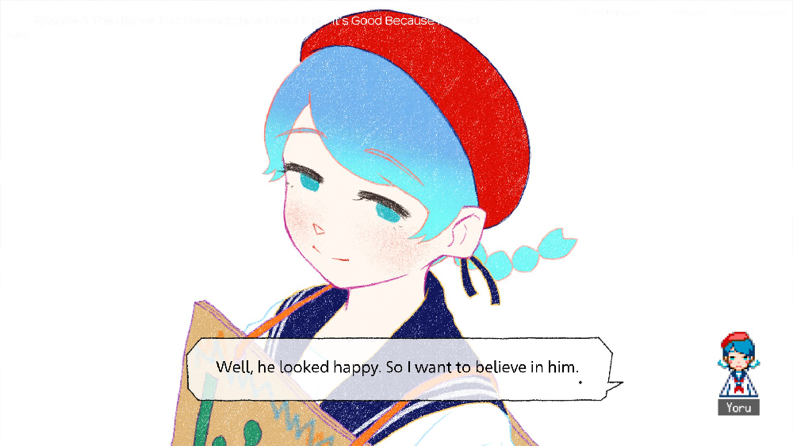
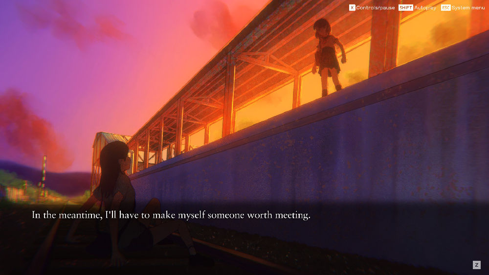
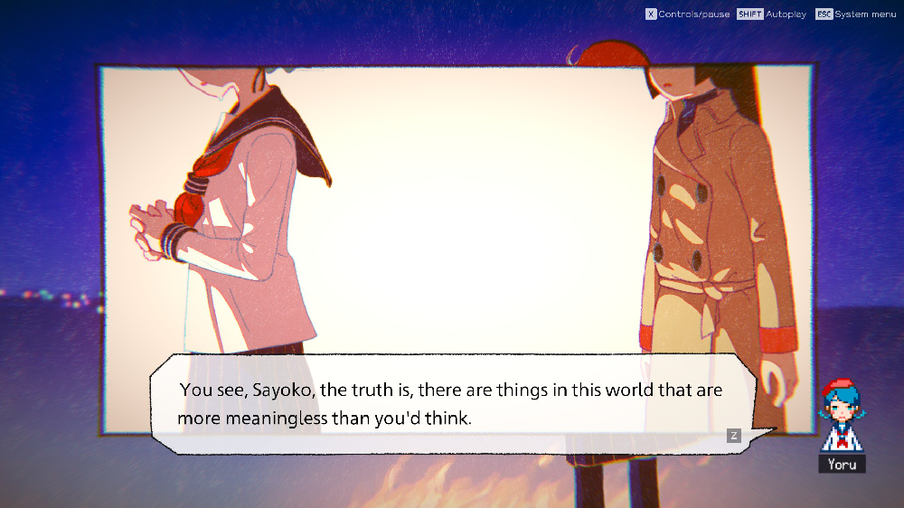
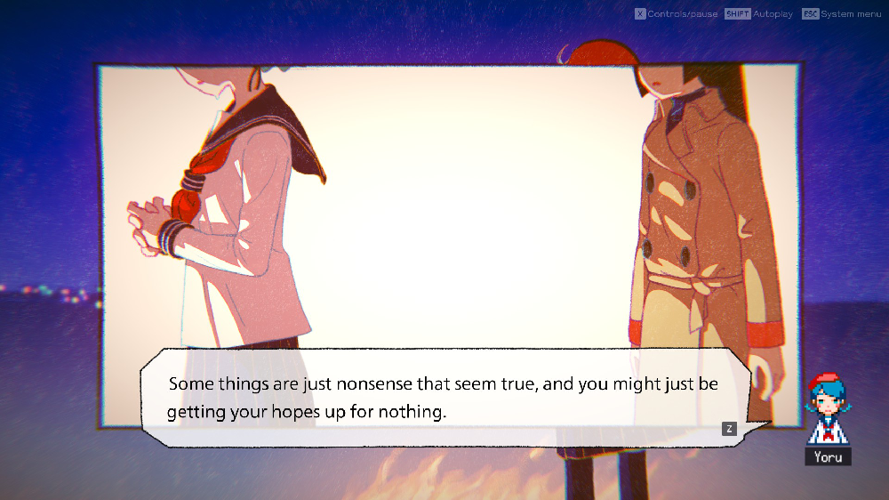
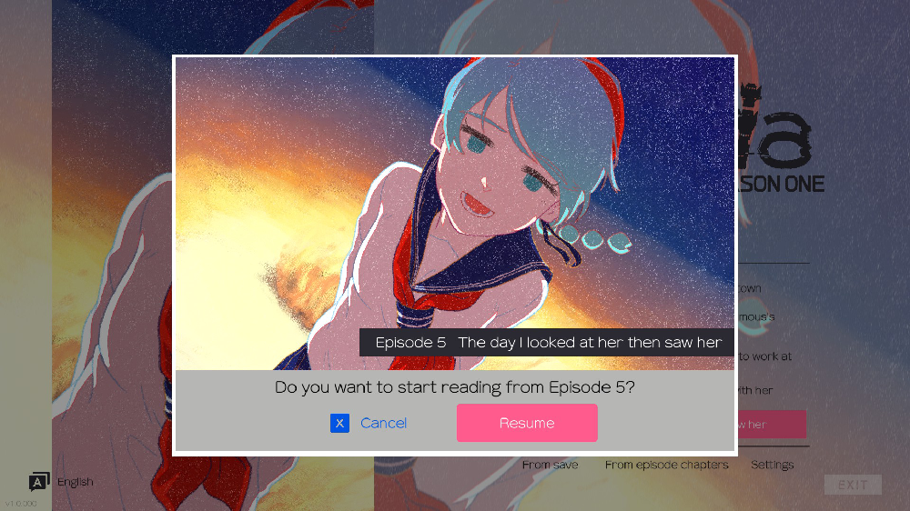

Like an essay, times new roman double spaced fr. (i dont know how to do this)
hi, today I finished “Ghostpia”. It took me quite a while because I'm quite a restless person, so when every force kinda pushed me to have some time to clear my mind, what better way than reading a book right?
“Ghostpia” writes with themes that underline most of my favourite media: Discovery of self, Moody characters, interpersonal relationships, philosophy, Nighttime aesthetics and that memorable silhouette in every depression story; “Why”
The characters are thankfully written quite bluntly and in Sayako’s monologues I can't help but choose to relate and dwell in the way they make me feel. “A Troublesome spectre that’s present and can never be interacted with” "Don't think of it as not being able to think. Think of it as not needing to think.” I’ve attached some screenshots too.
It’s a simple hook of showing just enough of Pacifica and Anya, but not everything so you then become a part of the story you read along to, your imagination is required. In the earlier episodes, that familiar, suffocating anxiety that Sayako runs away from; The helplessness and hopelessness of her role of her identity. There’s so much heart thats written into this feeling that finds it’s equally transforming polar twin with the rebuilding of trust in their trio friend group and the introduction of Yoru.
It’s the story we all love of turning from doubt to belief. They all learn to believe in themselves, and the love they wish to give. They believe in how worth it everything else. This story means alot to me, and I’d like to believe in what I think I can derive from this story: Time is meaningless. It sounds quite grim, but I think it’s a very freeing feeling. I have put so much importance on time, so much stupid stress on treating time as something more valuable than myhealthmyfriendshipsmycuriositymyhumanitymycompassionmylovemywillmyhomemylife; myself. “There are things in this world that are more meaningless than you’d think.”
haa I cant help but be jealous
being a lesbian looks so fun...
18/10/2025
“time” should mean to me whatever I want it to mean to me.
    